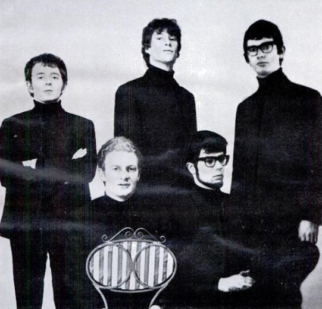

Do Wah Diddy Diddy gave Manfred Mann a transatlantic number one in 1964.
The song had already flopped once before a British band and one extra "diddy" turned it into a hit.

Table of Contents
- Jeff Barry, Ellie Greenwich and The Exciters' Original
- How Manfred Mann Turned It Into a Transatlantic Number One
- Cover Versions and the Song's Life After 1964
- FAQ
Jeff Barry, Ellie Greenwich and The Exciters' Original
Jeff Barry and Ellie Greenwich wrote the song at the Brill Building in New York.
They wanted the nonsense-syllable magic that already gave them a hit with "Da Doo Ron Ron" for the Crystals.
The Exciters recorded it first, in 1963, as "Do-Wah-Diddy," produced by Leiber and Stoller.
Cash Box praised its "great lead job," yet the record stalled at number 78.
Barry and Greenwich even cut their own version as the Raindrops, shelved until a 1994 reissue.
How Paul Jones Found the Song
Manfred Mann frontman Paul Jones discovered the Exciters' record and pushed the band to learn it.
Jones later called it "a great song, and what a great euphemism for sexual dalliance."
The band, already UK hitmakers with "5-4-3-2-1," added an extra "diddy" to the title while reworking it.
How Manfred Mann Turned Do Wah Diddy Diddy Into a Transatlantic Number One
Paul Jones sang and played harmonica.
Manfred Mann played organ, Mike Vickers played guitar and sax, Tom McGuinness played bass, and Mike Hugg played drums.
They recorded the song on June 11, 1964, with John Burgess producing.
His Master's Voice released it in the UK on July 10, backed with "What You Gonna Do?"
Ascot issued it in the US, and Capitol handled Canada.
The record topped the UK chart that August.
It reached number one on the Billboard Hot 100 on October 17, 1964.
It held that spot for two weeks, 13 weeks on the chart overall.
It also hit number one in Canada, Sweden and New Zealand, and number two in Australia.
Ellie Greenwich's Mixed Feelings
Greenwich was unsure at first about a male British group reworking her song.
She changed her mind once it became a hit.
She later said, "With the British Invasion, maybe this is a lucky charm, and it sure was."
She had one lasting complaint about Jones's grammar on the bridge.
He sang "I knew we was falling in love," and she joked, "I don't think so."
Manfred Mann toured the US afterward with Peter and Gordon.
They found the experience miserable and leaned on UK hits for the rest of the decade instead.
Cover Versions and the Song's Life After 1964
The song kept crossing borders and genres long after 1964.
French singer Sheila cut a French-language version that reached the top 10 there that same year.
- Claes Dieden charted a Swedish version in 1969, number 14 at home
- Fun Factory made it a 1995 Eurodance club hit, gold certified in Germany
- DJ Ötzi later charted his own Austrian cover
- The song was spoofed on The Muppet Show and heard on Full House
| Version | Year | Home chart peak | Notes |
|---|---|---|---|
| The Exciters (as "Do-Wah-Diddy") | 1963 | US #78 | Original recording |
| Manfred Mann | 1964 | UK #1, US #1 | Two weeks at #1 in both countries |
| Sheila (French version) | 1964 | France top 10 | Released same year as Manfred Mann's hit |
| Fun Factory | 1995 | Germany #6 | Eurodance remake, gold certified in Germany |
FAQ
Who wrote the song?
Brill Building songwriters Jeff Barry and Ellie Greenwich wrote it.
They aimed to repeat the nonsense-hook formula behind their earlier hit "Da Doo Ron Ron" for the Crystals.
Was it a cover song?
Yes.
The Exciters recorded it first in 1963 as "Do-Wah-Diddy," and it stalled at number 78.
Manfred Mann added an extra "diddy" to the title and reworked it into a rock number the following year.
Did the song reach number one in the US and UK?
Yes, in both countries.
It topped the UK chart in August 1964.
It then hit number one on the Billboard Hot 100 on October 17, 1964, for two weeks.
Who sang lead vocals for Manfred Mann on the record?
Paul Jones sang lead and played harmonica.
He also found the Exciters' original and pushed the band to record it.
Is Manfred Mann a person or a band?
Both.
Manfred Mann is the stage name of South African-born keyboardist Manfred Lubowitz.
The band took his name as their own in 1962.
What other artists covered the song?
French singer Sheila took a French-language version into the top 10 in 1964.
Swedish singer Claes Dieden charted with it in 1969.
German Eurodance act Fun Factory turned it into a 1995 club hit that went gold in Germany.
An extra "diddy" sent Manfred Mann to number one on both sides of the Atlantic.
That same chart run carried Herman's Hermits and The Searchers onto American radio too.
See how The Dave Clark Five made their own run at the US charts that year.
It all sits inside the British Invasion that turned Do Wah Diddy Diddy into a transatlantic hit.
Back to the 1960smusic.net homepage to explore every genre of the decade.